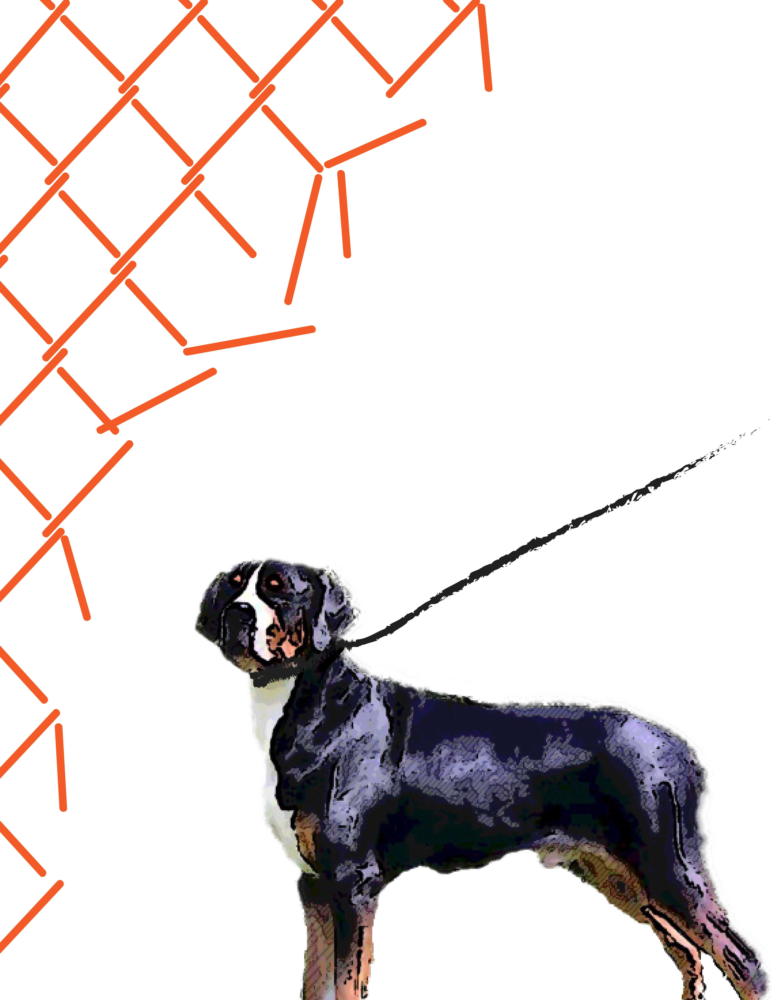
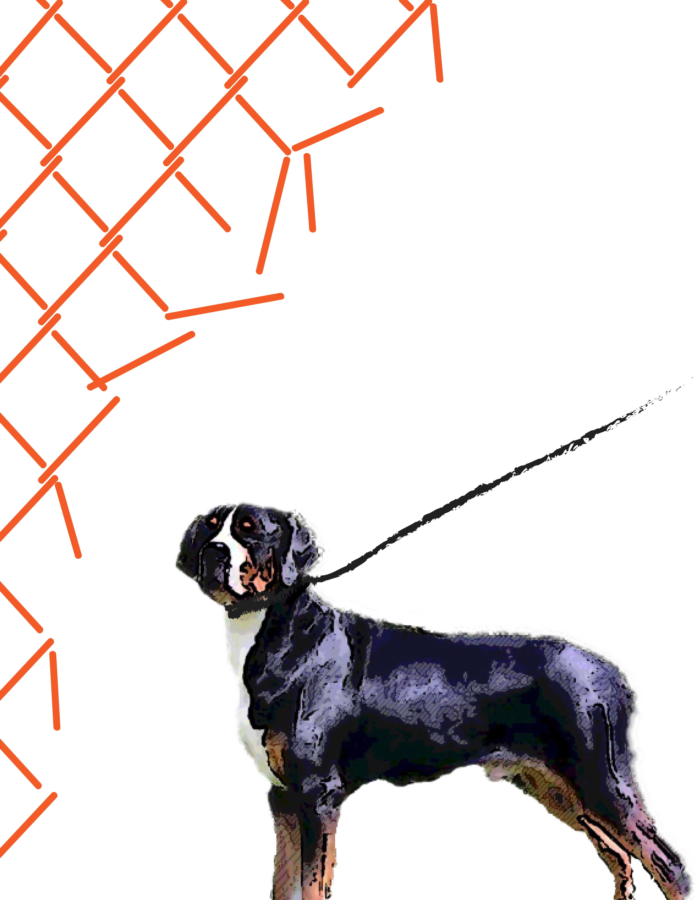

Adopt, Don't Shop.
Size: 17 x 22 inches (each)
During the process of creating these posters, I was really interested in the campaign called "Adopt, Don't Shop." launched by the "LCA" company and decided to make a poster serie for them. The idea is to make the posters kind of like they are telling a story. The first poster is a dog standing behind the net, and then when it goes to the third poster, it's expressing the idea that someone is taking it home. I want to make it like a story in order to encourage more people to adopt animal and save more lives. I also added some statistics in order to create the feeling of sympathy. The images that are used are photoshoped, and the credit for the company is placed at the bottom of the second poster.

 
